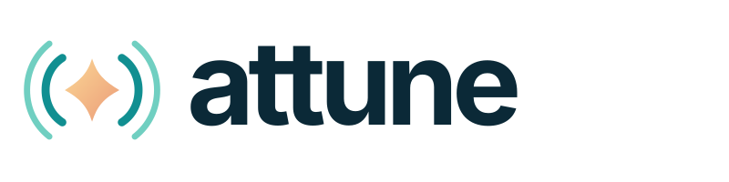
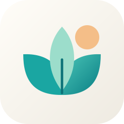
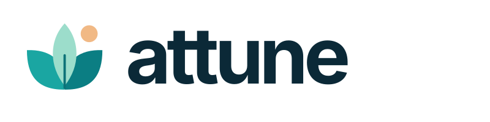

ATTUNE / BRAND EXPLORATIONS
A brighter way to meet the world.
Three warm, modern directions for an app that helps people notice more, connect more easily, and move through the day with confidence.
01
Horizon
A new day comes into view. The open arcs suggest awareness spreading outward without relying on a literal ear or sound wave.
APP ICON · 1:1
FULL TEXT LOGO
DARK MODE WORDMARK


02
Radiant
A bright center with room to take in the surroundings. Symmetry gives it a confident, dependable feel, while the soft spark keeps it human.
APP ICON · 1:1

FULL TEXT LOGO
DARK MODE WORDMARK


03
Bloom
Three shapes opening together, with a touch of sunrise. This direction feels especially welcoming and sits closest to the app’s current leaf mark.

APP ICON · 1:1
FULL TEXT LOGO
DARK MODE WORDMARK